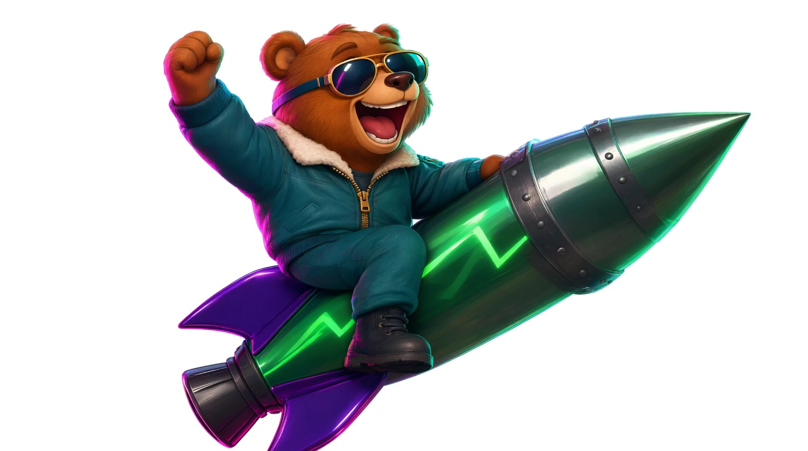

Скины: промпты для генератора
Медведь и ракета готовы, поэтому любой новый скин делаем правкой готовой картинки. Генератор меняет персонажа или окраску ракеты, а позу, ракурс, размер и кадр оставляет. Тогда игра соберёт скин по тем же правилам, что и медведя.
Как работать
- Выберите персонажа и ракету ниже: промпты под ними перепишутся сами. Можно выбрать готовый вариант или написать своё описание (лучше по-английски).
- Новый чат на каждый скин (ChatGPT или Gemini). Прикрепите основу и дайте промпт S1.
- Сохраните результат S1. Для S2–S8 каждый раз прикрепляйте S1 (не предыдущую картинку): так все картинки скина останутся согласованы между собой.
- Пришлите картинки в чат с Claude, подписав номера S1–S8 и название скина.

Основа для S1: долгое нажатие → сохранить. Скачать файлом
Персонаж
Ракета
Ракета меняет только цвета и материалы: форма, обод, кольцо, стабилизаторы и сопло остаются на своих местах, иначе игре не за что зацепиться.
Проверьте перед отправкой
- Персонаж везде один и тот же: те же цвета, одежда и аксессуары.
- Ракета целиком в кадре, с соплом и стабилизаторами. Небольшой изгиб носа не страшен: игра выпрямит его сама.
- Фон белый, без теней и пола. Фигура не обрезана краем.
Если вышло не так, поправьте в том же чате, например: «keep the same pose, only make the jacket red» или «the rocket must stay perfectly straight, as in the attached picture».
← Медведь и ракета: что сгенерировать